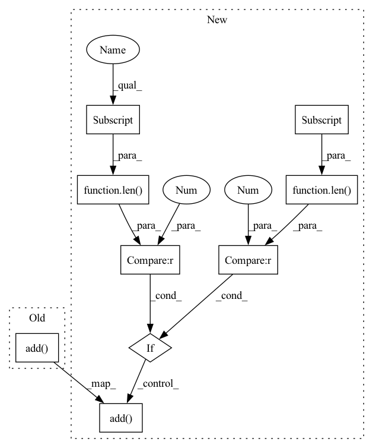

Pattern ID :12856
Before Change
if mode == "predict":
predict_results.setdefault(reverse_categories[predicate1], set()).add(tokenizer.decode(token_list))
else:
predict_results.setdefault(predicate1, set()).add( str(token_list))
break
return predict_results
After Change
for _start, predicate1 in zip(*start):
for _end, predicate2 in zip(*end):
if _start <= _end and predicate1 == predicate2:
if len(mapping[_start]) > 0 and len(mapping[_end]) > 0 :
start_in_text = mapping[_start][0]
end_in_text = mapping[_end][-1]
entity_text = text[start_in_text: end_in_text + 1]
predict_results.setdefault(predicate1, set()).add( entity_text)
break
return predict_results
In pattern: SUPERPATTERN
Frequency: 3
Non-data size: 9
Instances Fragment ID: 43523401
Project Name: stanleylsx/entity_extractor_by_pointer
Commit Name: 1c416e467a4fe62bbb0c8e086ef29dc6ece9b207
Time: 2020-09-01
Author: lishouxian@lishouxiandeMacBook-Pro.local
File Name: engines/predict.py
M Class Name: AnonimousClass
N Class Name: AnonimousClass
M Method Name: extract_entities(6)
N Method Name: extract_entities(7)
M Parent Class:
N Parent Class:
M File Name: engines/predict.py
N File Name: engines/predict.py
M Start Line: 7
M End Line: 35
N Start Line: 14
N End Line: 33
Before Change
if tensor_data:
tensor_data = tuple(tensor_data)
break
duplicates[(initializer.data_type, tensor_data, tensor_dims)].add( initializer.name)
return duplicates
def _create_name_sharing_dict(After Change
duplicates = defaultdict(set)
for i in range(len(models)):
for initializer in models[i].graph.initializer:
tensor_dims = tuple(getattr(initializer, "dims"))
if len(tensor_dims) > 1 or (len(tensor_dims) == 1 and initializer.data_type not in [6, 7]):
for data_attr in ["raw_data", "int32_data", "int64_data", "uint64_data", "float_data", "double_data"]:
tensor_data = getattr(initializer, data_attr)
if tensor_data:
tensor_data = tuple(tensor_data)
break
duplicates[(initializer.data_type, tensor_data, tensor_dims)].add( (initializer.name, i))
return duplicates
Fragment ID: 43523402
Project Name: huggingface/optimum
Commit Name: 3591786b7e41496244075b1100fa16a299d6741e
Time: 2023-02-24
Author: 9808326+fxmarty@users.noreply.github.com
File Name: optimum/onnx/transformations_utils.py
M Class Name: AnonimousClass
N Class Name: AnonimousClass
M Method Name: _find_duplicate_initializers(1)
N Method Name: _find_duplicate_initializers(1)
M Parent Class:
N Parent Class:
M File Name: optimum/onnx/transformations_utils.py
N File Name: optimum/onnx/transformations_utils.py
M Start Line: 31
M End Line: 44
N Start Line: 25
N End Line: 44
Before Change
if mode == "predict":
predict_results.setdefault(reverse_categories[predicate1], set()).add(tokenizer.decode(token_list))
else:
predict_results.setdefault(predicate1, set()).add( str(token_list))
break
return predict_results
After Change
encode_results = tokenizer(text, padding="max_length")
input_ids = encode_results.get("input_ids")
token = tokenizer.convert_ids_to_tokens(input_ids)
mapping = rematch(text, token)
token_ids = torch.unsqueeze(torch.LongTensor(input_ids), 0).to(device)
attention_mask = torch.unsqueeze(torch.LongTensor(encode_results.get("attention_mask")), 0).to(device)
bert_hidden_states = bert_model(token_ids, attention_mask=attention_mask)[0].to(device)
model_outputs = model(bert_hidden_states).detach().to("cpu")
decision_threshold = float(configs.decision_threshold)
for model_output in model_outputs:
start = np.where(model_output[:, :, 0] > decision_threshold)
end = np.where(model_output[:, :, 1] > decision_threshold)
for _start, predicate1 in zip(*start):
for _end, predicate2 in zip(*end):
if _start <= _end and predicate1 == predicate2:
if len(mapping[_start]) > 0 and len(mapping[_end]) > 0 :
start_in_text = mapping[_start][0]
end_in_text = mapping[_end][-1]
entity_text = text[start_in_text: end_in_text + 1]
predict_results.setdefault(predicate1, set()).add( entity_text)
break
return predict_results
Fragment ID: 43523404
Project Name: stanleylsx/entity_extractor_by_binary_tagging
Commit Name: 1c416e467a4fe62bbb0c8e086ef29dc6ece9b207
Time: 2020-09-01
Author: lishouxian@lishouxiandeMacBook-Pro.local
File Name: engines/predict.py
M Class Name: AnonimousClass
N Class Name: AnonimousClass
M Method Name: extract_entities(6)
N Method Name: extract_entities(7)
M Parent Class:
N Parent Class:
M File Name: engines/predict.py
N File Name: engines/predict.py
M Start Line: 7
M End Line: 35
N Start Line: 14
N End Line: 33